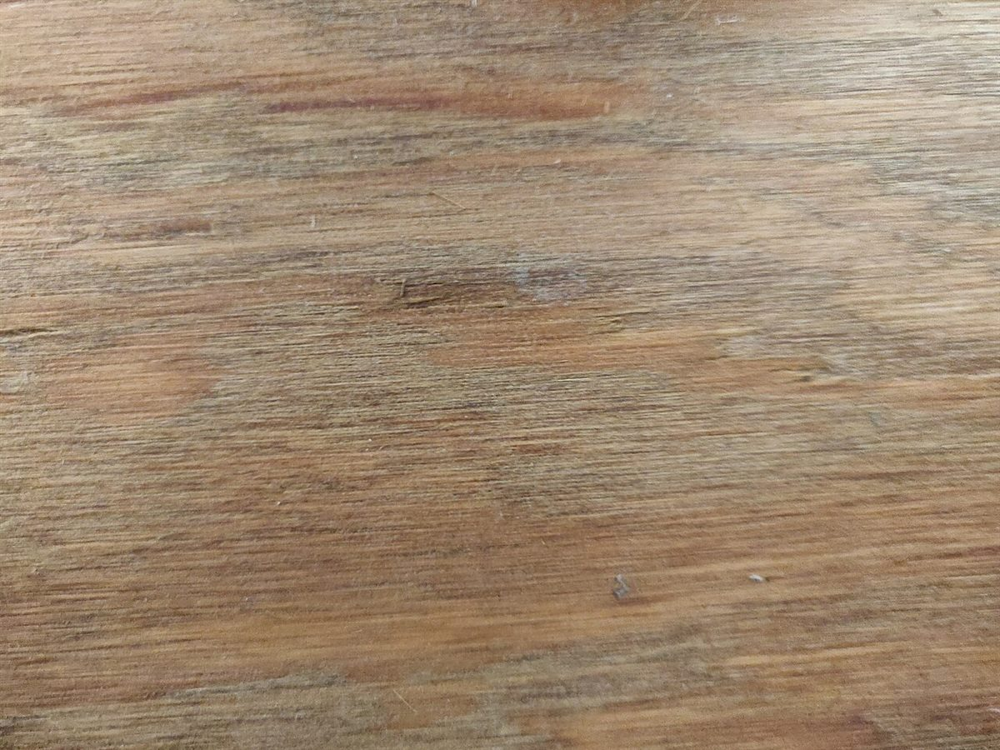
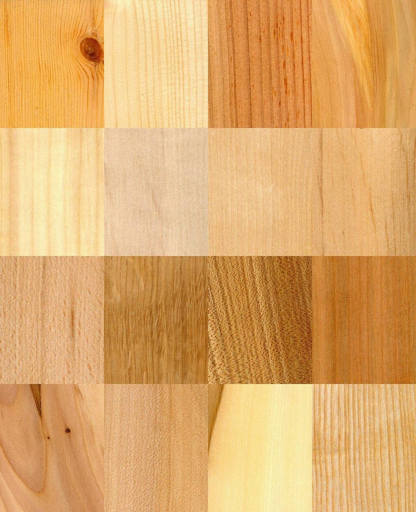

部位 3 定盤
お店のこと
板をのせる台のように、お店の基本情報を載せる場所です。
定盤の木目(イメージ)
平らな台のはなし
かんな盤の定盤は、板を平らに通すための台です。ここでは木の写真をイメージとして添えています。


木の写真はイメージです。お店のものではありません。
パンの写真(イメージ)


写真はイメージです。実際の商品写真はご提供いただいたものに差し替えます。
このサイトのテーマ
「自動かんな盤の部位配置図」は制作側の連想で、お店の理念・由来とは無関係です。